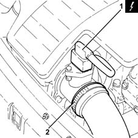
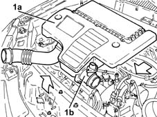
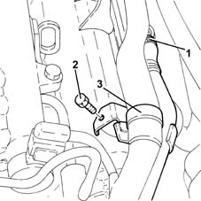
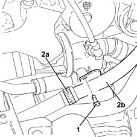

1080D28 Oil vapour recovery PIPE between separator and turbo - R.R.
- Path
- Procedures > 10 ENGINE > 1080 EXHAUST EMISSION CONTROL SYSTEM > 1080D crankcase vapour/gas recirculation system > 1080D28 Oil vapour recovery PIPE between separator and turbo - R.R.
- Kind
- repair procedure (removal / refitting; the operation number is the code)
- Applies to
- engines: 1.3 JTD; all production periods
- Interactive page
- https://sloeber94.github.io/elrnDB-lYpsln/en/#/2429068
Applies to: engines: 1.3 JTD; all production periods
 Removing
Removing
 Refitting
RefittingPosition the vehicle on the ramp.
Proceed with removal 5530B10 battery - r+r .
Proceed with removal 5530B52 Battery DRIP TRAY/SUPPORT - R.R. .
1. Disconnect the electrical connection from the air flow meter.
 | Name | Connector |
|---|---|---|
1 | Air flow meter |
2. Loosen the band and disconnect the the turbocharger air inlet sleeve from the rigid pipe, air flow meter side.

Applies to: engines: 1.3 JTD; all production periods
1. Remove the air filter (1a) complete with air flow meter (1b) by releasing from the underlying pins and then from the rear fastenings.

Applies to: engines: 1.3 JTD; all production periods
1. Loosen the band and disconnect the oil vapour recovery pipe between rigid pipe and separator.
2. Undo the bolt securing the oil vapour recovery pipe between separator and turbo.
3. Release the electrical wiring from the securing band.

Applies to: engines: 1.3 JTD; all production periods
1. Undo the remaining bolt securing the oil vapour recovery pipe between separator and turbo.
2. Loosen the band (2a) and remove the oil vapour recovery pipe between separator and turbo (2b) complete with pipe.
At the bench, loosen the band and separate the oil vapour recovery pipe between separator and turbo from the oil vapour recovery pipe between rigid pipe and separator.

Applies to: engines: 1.3 JTD; all production periods
Refitting
RemovingConnect the oil vapour recovery pipe between rigid pipe and separator to the oil vapour recovery pipe between separator and turbo and tighten the band.
Refit in its seating the oil vapour recovery pipe between separator and turbo complete with sleeve and tighten the band.
Secure the electrical wiring using the collar.
Tighten the bolts securing the oil vapour recovery pipe between separator and turbo.
Connect the oil vapour recovery pipe between rigid pipe and separator, separator side, and tighten the band.
Replace the air filter, complete with air flow meter, in its housing.
Connect the air intake sleeve to the turbocharger, air flow meter side, and tighten the band.
Connect the electrical connection to the air flow meter.
Proceed with refitting 5530B52 Battery DRIP TRAY/SUPPORT - R.R. .
Proceed with refitting 5530B10 battery - r+r .
Remove the car from the ramps.